|
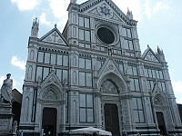
The Church of Santa Croce |
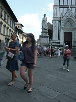
Santa Croce Square |

Statue of Dante Alighieri near Santa Croce Church |
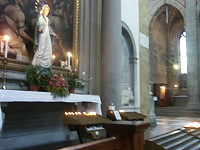
One of many shrines in the Santa Croce Church |
|
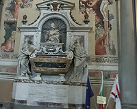
Galileo's tomb in the Santa Croce Church |
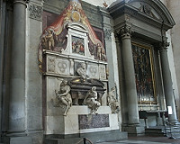
Michelangelo's tomb in the Santa Croce Church. |
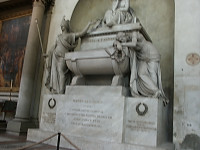
Dante Alighieri's cenotaph in the Church of Santa CroceA ceno |
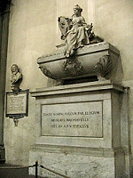
Cenotaph of Machiavelli |
|
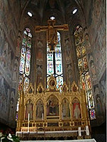
Main altar inside Santa Crooe Church. |
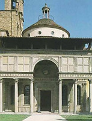
Brunelleschi Pazzi Chapel |
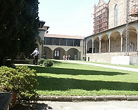
The first cloister of the Franciscan monastery. |
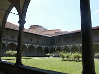
Second cloister of the Franciscan monks. |